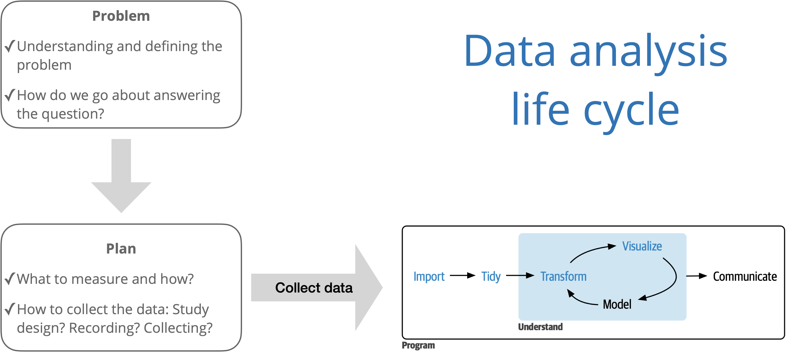

Welcome to CSCI 2025
Lecture 0
College of Idaho
CSCI 2025 - Winter 2026
Course Details
Instructor
Dr. Eric Friedlander
Boone 126B
Timetable
- Lectures
- M-TH 1-3pm - CML 105
- Office Hours
- M-TH 10-11am - Boone 126B
- Or by appointment
- Tutor Hours
- T 3-5pm - Jewett Tutoring Center (I think)
Tutor: Rabin Kalikote
Themes of this course

Source: R for Data Science with additions from The Art of Statistics: How to Learn from Data.

Source: R for Data Science
Data Analysis Lifecycle
- Importing data: how do we get data into R
- Wrangling data: how do we clean and prepare data
- Tidying data: how do we structure data for analysis
- Transforming data: how do we manipulate and summarize data
- Visualization: how do we explore data and communicate results
- Modeling: how do we quantify relationships in data (not a focus of this course)
- Communication: how do we share results with others
Course components
Course website
Class
In person
Attendance is required
A little bit of everything:
- Mostly active learning
Recordings will be posted before class – you are expected to watch ahead of time
Overview of the class
- Weeks 1 + 2: R, Tidyverse, building visualizations
- Week 3: Dashboards and shiny (tentative)
- Week 4: Cool s***: (AI, dimensionality reduction, etc…)
Announcements
Posted on Teams and sent via email, be sure to check both regularly
I’ll assume that you’ve read an announcement by the next “business” day
Assignments
Attendance
Required throughout the semester
If you miss more than 3 classes without a university-excused absence, you will fail this class
If you are more than 15 minutes late to class, this will count as an absence
Lectures + Readings
- Several readings will be assigned before each class period, most with videos
- You are expected to complete readings before class
(Pop) Quizzes
- Short quizzes will be held periodically throughout the semester to assess your understanding of the course material
- They will take place at the beginning of class, will not be announced in advance
- The purpose of these quizzes is to encourage you to keep up with the course material
- If you are late to class or have an unexcused absence on a quiz day, you will not be able to make up the quiz unless you notify me beforehand
Projects
- Two projects:
- Team Project: Building a Data Visualization Dashboard for Mark Heidrick
- Individual Project: Your choice!
Teamwork
- You will frequently work in teams of 2-4 students in class
- I will assign teams and roles
- I expect that:
- Everyone contributes
- Everyone learns
- Everyone is respectful
(Un)Grading
- You will (mostly) be in charge of determining your own grade
- After each class period, you will reflect on your learning and participation and assign yourself a grade
- You will also self assess your projects
- At the end of the semester, your final grade will be 50% based on your daily reflections, 25% based on your team project, and 25% based on your individual project
- HOWEVER:
- You can fail
- If I feel that you aren’t being honest with your self assessments, I will adjust your grade accordingly
Ways to fail this class (or get a D)
- Receiving less than a 50% (F) or 60% (D) average on the quizzes.
- Failing to achieve a minimum level of quality on either of your projects.
- Missing more than 3 class periods without a valid excuse.
- Arriving more than 15-minutes late to class will be considered an absence.
- Failing to turn in more than 3 self-evaluations.
Self-Evaluations
Starting tomorrow, at the end of each class period, you will answer the following questions and assign yourself a grade for your work since the last class period:
- How well do I understand the material covered in lectures and readings for today’s class?
- Did I put in a good faith effort to prepare for and participate in today’s class?
- How would I rate my level of engagement during today’s class?
- How well did I perform on the in-class activities?
- How did I learn and grow from the readings, lectures, and in-class activities today?
- What overall grade would I give myself for the work I completed since the end of the last class period?
Course policies
Late work policy
Quizzes: not accepted late without university-excused absence
Project presentations: Late submissions not accepted
Project write-ups: Late submissions not accepted
Academic integrity, AI, Collaboration
- I’ve structured this course so that you will be presenting your work in front of the class frequently
- The purpose of this course is to learn
- I will frequently be asking you to explain your code and your reasoning in front of the class
- Feel free to use any resources you want… just make sure you can explain things to the class
Support
Office hours
Tutor: Rabin Kalikote
T: 3-5PM
Lots of resources on the website
Course Technology
- Microsoft Teams (install now)
- R and Positron (install by tomorrow)
- Git and Github (later)
- Google AI Pro Subscription (free for students for a year)
- NotebookLM
- Custom Recitation Gem
- More AI later in the semester
Getting to Know You
In Teams, send me a Chat with answers to the following questions:
- What do you prefer to be called?
- Why are you taking this course?
- What is your experience with R or programming in general?
- How are you with group work?
- Is there anything you want me to know about you (e.g. accommodations, sports, preferred pronouns, etc.)?
- We’ll be using a lot of data sets in this class. Are there any topics you find interesting that you’d like to look at data on?
- Give me some songs for the class playlist?
Wrap up
For Tomorrow
Install R and Positron
Sign-up for a Google AI Pro Account
Create a Github Account and activate your Education benefits
Read the syllabus
Complete Lectures 1-4 readings and videos